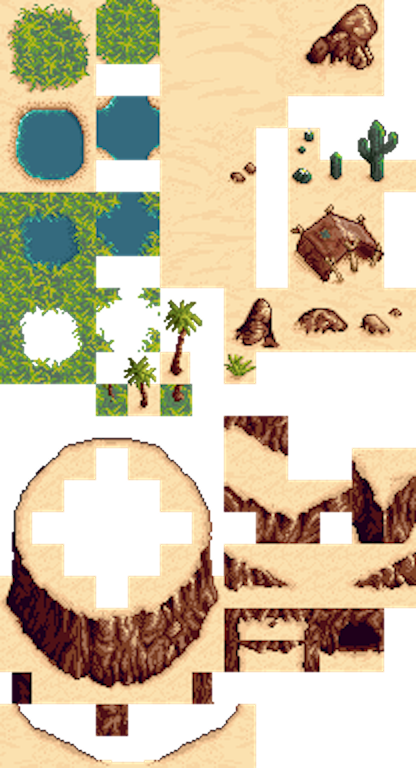
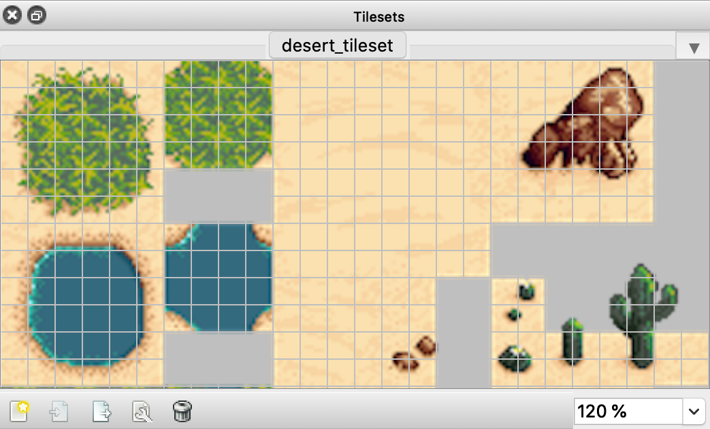
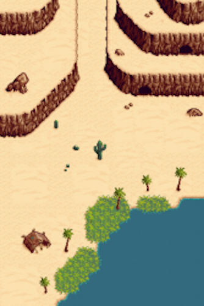
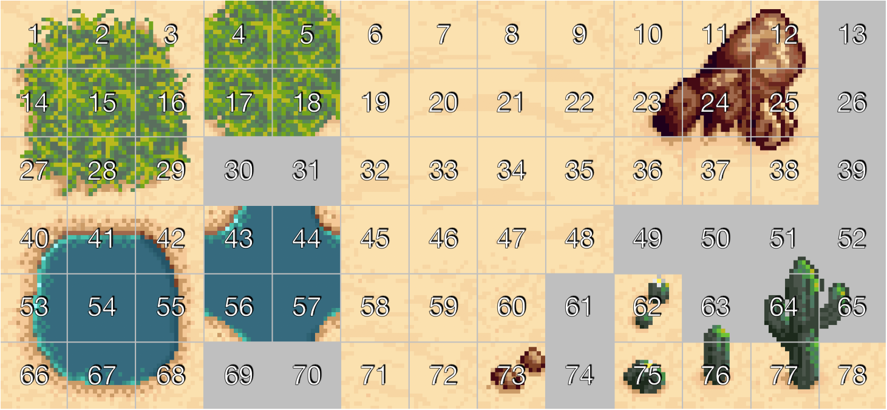

Fondo y scroll¶
Hasta el momento hemos visto cómo crear los diferentes elementos dinámicos (sprites) de nuestro juego, como por ejemplo nuestro personaje, los enemigos, o los disparos. Pero todos estos elementos normalmente se moverán sobre un escenario.
En los juegos normalmente tendremos un fondo sobre el que se mueven los personajes. Muchas veces los escenarios del juego son muy extensos y no caben enteros en la pantalla. De esta forma lo que se hace es ver sólo la parte del escenario donde está nuestro personaje,y conforme nos movamos se irá desplazando esta zona visible para enfocar en todo momento el lugar donde está nuestro personaje. Esto es lo que se conoce como scroll.
El tener un fondo con scroll será más costoso computacionalmente, ya que siempre que nos desplacemos se deberá redibujar toda la pantalla, debido a que se está moviendo todo el fondo. Además para poder dibujar este fondo deberemos tener una imagen con el dibujo del fondo para poder volcarlo en pantalla. Si tenemos un escenario extenso, sería totalmente prohibitivo hacer una imagen que contenga todo el fondo. Esta imagen sobrepasaría con total seguridad el tamaño máximo de las texturas OpenGL.
Para evitar este problema lo que haremos normalmente en este tipo de juegos es construir el fondo como un mosaico (tilemap).
Tilemaps¶
Los mapas construidos mediante tilemaps se componen de una serie de piezas que combinaremos formando un mosaico.
Para ello, en primer lugar deberemos crear una imagen con las piezas básicas que vamos a necesitar para nuestro fondo (lo que se conoce como tileset). Esta será una imagen de pequeñas dimensiones, ya que simplemente contiene piezas que posteriormente reutilizaremos. A partir de dichas piezas construiremos el mosaico que será nuestro tilemap.
Mostramos a contionuación como ejemplo el tileset "Desert", creado por MrBeast y obtenido de OpenGameArt.org.

Encontramos herramientas que nos permiten hacer esto de forma sencilla, siendo Tiled (http://www.mapeditor.org) la más conocida. Con esta herramienta podremos proporcionar una textura con las distintas piezas con las que construiremos el mosaico (tileset), y combinar estas piezas de forma visual para construir nuestros mapas.

En primer lugar debemos proporcionar una imagen con un conjunto de patrones (Mapa > Nuevo conjunto de patrones).
Deberemos indicar el ancho y alto de cada "pieza" (tile), para que así sea capaz de particionar la imagen y obtener de ella los diferentes patrones con los que construir el mapa. Una vez cargados estos patrones, podremos seleccionar cualquiera de ellos y asignarlo a las diferentes celdas del mapa.

El resultado se guardará en un fichero de tipo .tmx, basado en XML, que la mayor parte de motores 2D son capaces de leer.
Las dimesiones del mapa serán (columnas \cdot ancho) \times (filas \cdot alto), siendo ancho \times alto las dimensiones de cada tile, y columnas \times filas el número de celdas que tiene el mapa.

Hemos visto la creación básica de un escenario con Tiled Map Editor, pero esta herramienta nos da más facilidades para la creación de los fondos. En el caso anterior hemos visto como crear el fondo a partir de una única capa de mosaico, pero podemos hacer que nuestros fondos se compongan de varias capas.
En el panel de la derecha de la herramienta vemos la lista de capas, y podemos añadir nuevas capas. Al añadir una nueva capa, nos preguntará si queremos una nueva capa de patrones o de objetos.
- Las capas de patrones nos permitirán crear el aspecto visual del fondo mediante un mosaico, como hemos visto anteriormente.
- Las capas de objetos nos permiten marcar diferentes zonas del mapa, por ejemplo para indicar puntos en los que aparecen enemigos, o el punto en el que se debe situar nuestro personaje al comenzar el nivel, o incluso marcar zonas geométricas que no se visualizarán (por ejemplo para determinar los límites del escenario o para ser utilizados por el motor de físicas).
Vamos a ver cada uno de estos tipos de capas con más detenimiento.
Capas de patrones¶
Como hemos indicado anteriormente, las capas de patrones nos permiten definir el aspecto del nivel mediante un mosaico, utilizando un conjunto de patrones para fijar el contenido de cada celda del mosaico.
Cada capa se define como una matriz, en la que en cada posición se indica un número entero que identifica el tile que ocupará dicha celda. Este identificador de cada tile es lo que se conoce como gid. Dentro del tileset, cada tile se identificará por un gid único, empezando a contar desde 1 (normalmente se asignan de forma secuencial siguiendo el orden en el que están en el conjunto de patrones). De esta forma, cuando en la matriz de la capa tenemos un 0 como gid, quiere decir que esa celda está vacía, mientras que si tiene otro valor, dicho valor representa el identificador del patrón correspondiente.

Cuando creamos varias capas de patrones, será importante fijar su orden, ya que las capas que estén al frente taparán a las que estén atrás. Este orden viene determinado por el orden en el que las capas aparecen en la lista del panel derecho. Las capas al comienzo de la lista quedarán por delante de las demás. Podemos cambiar el orden de las capas en esta lista mediante los botones con las flechas hacia arriba y hacia abajo para conseguir situar cada una de ellas en la profundidad adecuada.

Las utilidades de esta división en capas son varias:
- Aspecto: Un primer motivo para utilizar diferentes capas puede ser simplemente por cuestiones de aspecto, para combinar varios elementos en una misma celda. Por ejemplo, en una capa de fondo podríamos poner el cielo, y en una capa más cercana una reja con fondo transparente. De esa forma ese mismo recuadro con la reja podría ser utilizado en otra parte del escenario con un fondo distinto (por ejemplo de montañas), pudiendo así con únicamente 3 recuadros obtener 4 configuraciones diferentes: cielo, montaña, cielo con reja, y montaña con reja.
- Colisiones: Puede interesarnos que los elementos de una capa nos sirvan para detectar colisiones con los objetos del juego. Por ejemplo, podemos en ella definir muros que los personajes del juego no podrán atravesar. Consideraremos desde nuestro juego que todas las celdas definidas en esa capa suponen regiones que deben colisionar con nuestros sprites.
- Consumibles: Podemos definir una capa con objetos que podamos recoger. Por ejemplo podríamos definir una capa con monedas, de forma que cada vez que el jugador entra en una celda con una moneda dicha moneda sea eliminada del mapa y se nos añada a un contador de puntuación.
Colisiones con el mapa
La detección de colisiones con los muros del fondo será muy útil en juegos de tipo RPG o de plataformas. Para hacer esto lo primero que debemos hacer es obtener la capa que define los elementos que se comportan como "muro" tal como hemos visto anteriormente. De esta capa necesitaremos tener alguna forma de identificar qué celdas definen muros. La forma más sencilla sería considerar que todo son muros en dicha capa, de forma que si el gid de una celda es distinto de 0, entonces tenemos un muro.
Una forma más elaborada de marcar estas celdas consiste en darles una serie de propiedades que nuestro programa podrá leer y así comprobar si se trata de un muro con el que podemos colisionar o no. Para asignar propiedades a un objeto del conjunto de patrones dentro de Tiled podemos pulsar con el botón derecho sobre él, y seleccionar Propiedades del Patrón.... Se abrirá un cuadro como el siguiente donde podremos definir dichas propiedades:

Lo que deberemos hacer es marcar todos los objetos del conjunto de patrones que sirvan para definir muros con una misma propiedad que los marque como tal.
Cuando entremos en una determinada celda, deberemos desde el código del juego comprobar las propiedades de dicha celda y ver si es colisionable o no.
Para comprobar las colisiones de nuestro sprite con los muros una primera aproximación podría consistir en hacer la comprobación con todas las celdas de la capa. Sin embargo esto no resulta nada eficiente ni adecuado. La solución que se suele utilizar habitualmente consiste en comprobar la colisión únicamente con las celdas de nuestro entorno. Haremos lo siguiente:
- Obtendremos la posición en las que está centrado nuestro sprite.
- Calcularemos las coordenadas de la celda a la que corresponde (dividiendo entre la anchura y altura de cada celda).
- Obtendremos los gid de las 9 celdas adyacentes.
- Comprobaremos si colisiona con alguna de ellas, corrigiendo la posición del sprite en tal caso.
Modificación del mapa
En muchos casos nos interesará tener en el mapa objetos que podamos modificar. Por ejemplo, monedas u otros items que podamos recolectar, u objetos que podemos destruir. Para conseguir esto podemos definir una capa con dichos objetos, y marcarlos con una propiedad que nos indique que son "recolectables" o "destruibles" (o bien considerar que todos en la capa lo son).
Desde el código del juego podremos modificar el gid de cada celda de la capa. Por ejemplo, poniendo el gid a 0 haremos que una celda de la capa "se borre".
Capas de objetos¶
Hasta el momento hemos visto las capas de patrones, que se construyen como un mosaico de celdas que definirá el aspecto del fondo. Existe otro tipo de capa que podemos incluir en nuestro diseño del fondo que no se limita al mosaico de celdas, sino que nos permite marcar cualquier región del mapa sin ajustarse a la rejilla de celdas. Estas son las capas de objetos. En estas capas podremos por ejemplo marcar zonas de mapas donde aparecen enemigos, o donde se situa automáticamente nuestro personaje al iniciar el nivel.
Cuando añadamos y seleccionemos una capa de objetos, en la barra de herramientas superior se activarán algunos iconos que nos permitirán crear nuevos objetos y seleccionar y cambiar las propiedades de los objetos existentes. Podremos añadir objetos como puntos, regiones rectangulares, o polilíneas.

Tras crear un objeto, podremos cambiar a la herramienta para la selección y modificación de objetos, seleccionar el objeto que acabamos de crear, pulsar sobre él con el botón derecho, y seleccionar la opción Propiedades del Objeto .... Veremos una ventana como la siguiente, en la que podremos darle un nombre, modificar sus dimensiones, y añadir una lista de propiedades.

Estos objetos podrán ser leidos desde el código. Por ejemplo, podemos definir una polilínea para indicar al motor de físicas cómo debe crear la geometría estática del suelo del escenario.
Scroll del escenario¶
Cuando en el juego tenemos un mapa más extenso que el tamaño de la pantalla, tendremos que implementar scroll para movernos por él. Para hacer scroll podemos desplazar la capa principal del juego, que contiene tanto el mapa de fondo como los sprites (pero no los elementos del HUD, como son los marcadores de puntuación, número de vidas, etc).
Algunos motores nos permiten utilizar también un nodo cámara, que se encargará de realizar esta función (al mover la cámara, se moverá la región visualizada del escenario). En tal caso, el HUD debe añadirse como hijo a la cámara, para que así siempre esté en pantalla.
Normalmente el scroll deberá seguir la posición de nuestro personaje. Conforme movamos nuestro personaje deberemos centrar el mapa en él.
En juegos 2D podemos crear una ilusión de profundidad creando varias capas de fondo y haciendo que las capas más lejanas se muevan a velocidad más lenta que las más cercanas al hacer scroll. Esto es lo que se conoce como scroll parallax. Algunos motores nos proporcionan facilidades para crear este tipo de scroll.